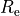

1D and 2D light models¶
Code author: Wilfried Mercier - IRAP <wilfried.mercier@irap.omp.eu>
Useful functions for galaxy modelling and other related computation.
-
galaxy.models.bulge(r, re, b4=None, Ie=None, mag=None, offset=None)[source]¶ Code author: Wilfried Mercier - IRAP <wilfried.mercier@irap.omp.eu>
Computes the value of the intensity of a de Vaucouleur bulge at position r defined as
with  the effective radius and
 the surface brightness at the effective radius.
the surface brightness at the effective radius.- Parameters
r (float) – position at which the profile is computed
re (float) – half-light radius
b4 (float) – (Optional) b4 factor appearing in the Sersic profile. If None, its value will be computed.
Ie (float) – (Optional) surface brightness at half-light radius
mag (float) – (Optional) total integrated magnitude used to compute Ie if not given
offset (float) – (Optional) magnitude offset in the magnitude system used
- Returns
surface brightness
- Return type
float
-
galaxy.models.bulgeDiskOnSky(nx, ny, Rd, Rb, x0=None, y0=None, Id=None, Ib=None, magD=None, magB=None, offsetD=None, offsetB=None, inclination=0, PA=0, combine=True, PSF={'FWHMX': 0.8, 'FWHMY': 0.8, 'name': 'Gaussian2D', 'sigmaX': None, 'sigmaY': None, 'unit': 'arcsec'}, noPSF=False, arcsecToGrid=0.03, fineSampling=1, samplingZone={'dx': 2, 'dy': 2, 'where': 'centre'}, skipCheck=False, verbose=True)[source]¶ Code author: Wilfried Mercier - IRAP <wilfried.mercier@irap.omp.eu>
Generate a bulge + (sky projected) disk 2D model (with PSF convolution).
Note
How to use
Apart from the mandatory inputs, it is necessary to provide:
an intensity at Re for each profile
a total magnitude value for each profile and a corresponding magnitude offset per profile (to convert from magnitudes to intensities)
Infos about sampling
fineSampling parameter can be used to rebin the data. The shape of the final image will depend on the samplingZone used:
if the sampling is performed everywhere (‘where’ keyword in samplingZone equal to ‘all’), the final image will have dimensions (nx*fineSampling, ny*fineSampling)
if the sampling is performed around the centre (‘where’ equal to ‘centre’), the central part is over-sampled, but needs to be binned in the end so that pixels have the same size in the central part and around. Thus, the final image will have the dimension (nx, ny).
Warning
Rd and Rb should be given in pixel units. If you provide them in arcsec, you must update the arcsecToGrid value to 1 (since 1 pixel will be equal to 1 arcsec).
- Parameters
nx (int) – size of the model for the x-axis
ny (int) – size of the model for the y-axis
Rb (float) – bulge half-light radius. Best practice is to provide it in pixels.
Rd (float) – disk half-light radius. Best practice is to provide it in pixels.
arcsecToGrid (float) – (Optional) pixel size conversion in arcsec/pixel, used to convert the FWHM/sigma from arcsec to pixel
Ib (float) – (Optional) bulge intensity at (bulge) half-light radius. If not provided, magnitude and magnitude offset must be given instead.
Id (float) – (Optional) disk intensity at (disk) half-light radius. If not provided, magnitude and magnitude offset must be given instead.
inclination ((Optional) int or float) – (Optional) disk inclination on sky. Generally given between -90° and +90°. Value must be given in degrees.
magB (float) – (Optional) bulge total magnitude
magD (float) – (Optional) disk total magnitude
offsetB (float) – (Optional) bulge magnitude offset
offsetD (float) – (Optional) disk magnitude offset
noPSF (bool) – (Optional) whether to not perform PSF convolution or not
PA (int or float) – disk position angle (in degrees)
fineSampling (int(>0)) – fine sampling for the pixel grid used to make high resolution models. For instance, a value of 2 means that a pixel will be split into two subpixels.
PSF (dict) – (Optional) Dictionnary of the PSF (and its parameters) to use for the convolution. For now, only 2D Gaussians are accepted as PSF.
samplingZone (dict) –
where to perform the over sampling. Dictionnaries should have the following keys:
’where’ (type str) -> either ‘all’ to perform everywhere or ‘centre’ to perform around the centre
’dx’ (type int) -> x-axis maximum distance from the centre coordinate. A sub-array with x-axis values within [xpos-dx, xpos+dx] will be selected. If the sampling is performed everywhere, ‘dx’ does not need to be provided.
’dy’ (type int) -> y-axis maximum distance from the centre coordinate. A sub-array with y-axis values within [ypos-dy, ypos+dy] will be selected. If the sampling is performed everywhere, ‘dy’ does not need to be provided.
skipCheck (bool) – whether to skip the checking part or not
x0 (int or float) – x-axis centre position. Default is None so that nx//2 will be used.
y0 (int or float) – y-axis centre position. Default is None so that ny//2 will be used.
verbose (bool) – whether to print text on stdout or not
- Returns
X, Y grids and the total (sky projected + PSF convolved) model of the bulge + disk decomposition
- Return type
2D ndarray, 2D ndarray, 2D ndarray
-
galaxy.models.exponential_disk(r, re, b1=None, Ie=None, mag=None, offset=None)[source]¶ Code author: Wilfried Mercier - IRAP <wilfried.mercier@irap.omp.eu>
Computes the value of the intensity of an exponential disk at position r defined as
with the effective radius and
the surface brightness at the effective radius.- Parameters
r (float) – position at which the profile is computed
re (float) – half-light radius
b1 (float) – (Optional) b1 factor appearing in the Sersic profile. If None, its value will be computed.
Ie (float) – (Optional) surface brightness at half-light radius
mag (float) – (Optional) total integrated magnitude used to compute Ie if not given
offset (float) – (Optional) magnitude offset in the magnitude system used
- Returns
surface brightness
- Return type
float
-
galaxy.models.hernquist(r, a, M)[source]¶ Code author: Wilfried Mercier - IRAP <wilfried.mercier@irap.omp.eu>
Hernquist profile defined as

with
 the total mass and
the total mass and  the scale radius.
the scale radius.- Parameters
a (int or float) – scale radius
M (int or float) – total mass
r (int or float or ndarray[int] or ndarray[float]) – radial distance(s) where to compute the Hernquist profile. Unit must be the same as a.
- Returns
Hernquist profile evaluated at the given distance(s). Unit is that of M/a^3.
- Return type
float or ndarray[float]
- Raises
TypeError – if r, M and a are neither int, nor float
ValueError – if np.any(r) < 0, if a <= 0 or if M < 0
-
galaxy.models.model2D(nx, ny, listn, listRe, x0=None, y0=None, listIe=None, listMag=None, listOffset=None, listInclination=None, listPA=None, combine=True, fineSampling=1, samplingZone={'dx': 5, 'dy': 5, 'where': 'centre'}, skipCheck=False)[source]¶ Code author: Wilfried Mercier - IRAP <wilfried.mercier@irap.omp.eu>
Generate a (sky projected) 2D model (image) of a sum of Sersic profiles. Neither PSF smoothing, nor projections onto the sky whatsoever are applied here.
Note
How to use
Apart from the mandatory inputs, it is necessary to provide:
an intensity at Re for each profile
a total magnitude value for each profile and a corresponding magnitude offset per profile (to convert from magnitudes to intensities)
Infos about sampling
fineSampling parameter can be used to rebin the data. The shape of the final image will depend on the samplingZone used:
if the sampling is performed everywhere (‘where’ keyword in samplingZone equal to ‘all’), the final image will have dimensions (nx*fineSampling, ny*fineSampling)
if the sampling is performed around the centre (‘where’ equal to ‘centre’), the central part is over-sampled, but needs to be binned in the end so that pixels have the same size in the central part and around. Thus, the final image will have the dimension (nx, ny).
- Parameters
listn (list[int] or list[float]) – list of Sersic index for each profile
listRe (list[float]) – list of half-light radii for each profile
nx (int) – size of the model for the x-axis
ny (int) – size of the model for the y-axis
combine (bool) – (Optional) whether to combine (sum) all the components and return a single intensity map, or to return each component separately in lists
listIe (list[float]) – (Optional) list of intensities at re for each profile
listInclination (list[int] or list[float]) – (Optional) list of inclination of each Sersic component on the sky in degrees
listPA (list[int] or list[float]) – (Optional) list of position angle of each Sersic component on the sky in degrees. Generally, these values are given between -90° and +90°.
fineSampling (int(>0)) – (Optional) fine sampling for the pixel grid used to make high resolution models. For instance, a value of 2 means that a pixel will be split into two subpixels.
samplingZone (dict) –
(Optional) where to perform the sampling. Default is everywhere. Dictionnaries should have the following keys:
’where’ (type str) -> either ‘all’ to perform everywhere or ‘centre’ to perform around the centre
’dx’ (type int) -> x-axis maximum distance from the centre coordinate. An sub-array with x-axis values within [xpos-dx, xpos+dx] will be selected. If the sampling is performed everywhere, ‘dx’ does not need to be provided.
’dy’ (type int) -> y-axis maximum distance from the centre coordinate. An sub-array with y-axis values within [ypos-dy, ypos+dy] will be selected. If the sampling is performed everywhere, ‘dy’ does not need to be provided.
skipCheck (bool) – (Optional) whether to skip the checking part or not
x0 (int or float) – (Optional) x-axis centre position. Default is None so that nx//2 will be used.
y0 (int or float) – (Optional) y-axis centre position. Default is None so that ny//2 will be used.
- Returns
X, Y grids and the intensity map if combine is True
X, Y grids and a listof intensity maps for each component if combine is False
- Raises
TypeError – if ‘dx’ and ‘dy’ keys not in samplingZone, if fineSampling, nx and ny are neither int, nor np.integer
ValueError – if ‘where’ key value in samplingZone is neither ‘all’, nor ‘centre’, if fineSampling < 1, if at least one PA is not in the range [-90, 90] deg, or if Ie and mag and offset are None
-
galaxy.models.nfw(r, c, rs)[source]¶ Code author: Wilfried Mercier - IRAP <wilfried.mercier@irap.omp.eu>
NFW profile defined as

with
 the halo scale radius, with the virial radius where the mean overdensity is equal to 200,
the halo scale radius, with the virial radius where the mean overdensity is equal to 200,  the halo concentration, the Universe closure density, and
the halo concentration, the Universe closure density, and  the halo overdensity.
the halo overdensity.- Parameters
c (int or float) – halo concentration
r (int or float or ndarray[int] or ndarray[float]) – radial distance(s) where to compute the profile. Unit must be the same as rs.
rs (int or float) – scale radius
- Returns
NFW profile evaluated at the given distance. Unit is that of a 3D mass density in SI (i.e. kg/m^3).
- Return type
float or ndarray[float]
- Raises
TypeError – if r, c and rs are neither int, nor float
ValueError – if np.any(r)<0, if c<=0, or if rs<=0
-
galaxy.models.sersic_profile(r, n, re, Ie=None, bn=None, mag=None, offset=None)[source]¶ Code author: Wilfried Mercier - IRAP <wilfried.mercier@irap.omp.eu>
General Sersic profile defined as
with the effective radius,
the surface brightness at the effective radius and  the Sersic index.
the Sersic index.Note
Compute it with:
n, re and Ie
n, re, mag and offset
- Parameters
r (float) – position at which the profile is computed
re (float) – half-light radius
bn (float) – (Optional) bn factor appearing in the Sersic profile. If None, its value will be computed.
Ie (float) – (Optional) surface brightness at half-light radius
mag (float) – (Optional) total integrated magnitude used to compute Ie if not given
offset (float) – (Optional) magnitude offset in the magnitude system used
- Returns
surface brightness
- Return type
float